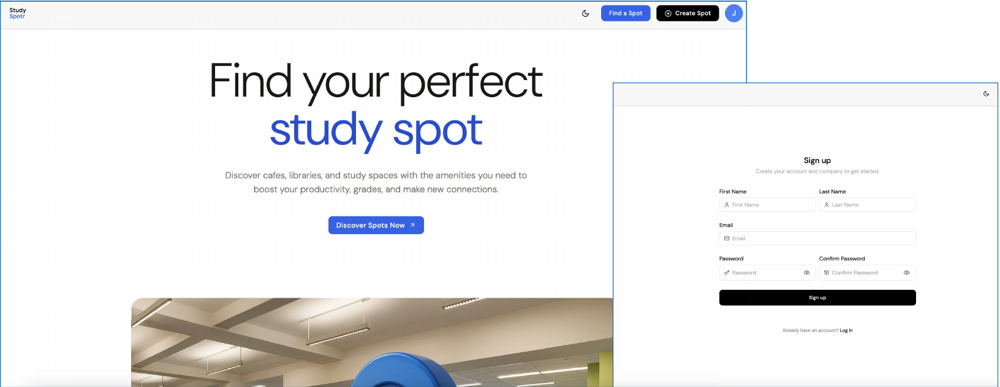
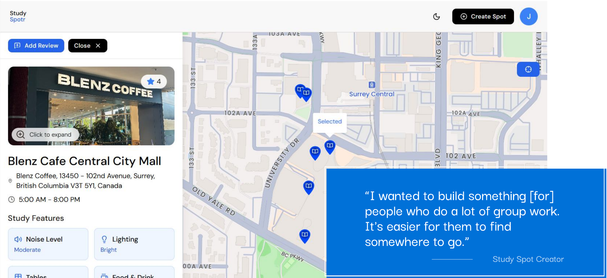

01
Diary study
- Who
- 4 participants over 3–5 days
- When
- Before testing, with the live site in real-world use
- Captures
- Evolving attitudes, likes and dislikes, logged each day via an online survey

Study Spot lets students find and post study spaces, but our client had a retention problem: users rarely created their own spots, hesitated to share their location, and dropped off after a single visit. Over four weeks, my team of four ran a mixed-methods usability evaluation to answer one question: what would make Study Spot a daily tool instead of a one-time try?
As a researcher, I co-designed the research instruments and owned the qualitative side: the interview discussion guide, the post-test questionnaire and the A/B measurement plan. I moderated sessions and synthesized transcripts into the insight themes that set feature priorities.

Study Spot helps students discover cafés, libraries and study spaces with the amenities they need. The platform depends on students posting and reviewing spots, but most users never contributed, and most never came back after their first visit.
Students aged 16 to 22 who care about a space’s features (Wi-Fi, outlets, whiteboards), want to study alongside other students, or need spots that work for group projects. We recruited solo, group and hands-on learners from SFU and other schools so we could see different workflows.
Difficulty getting users to create their own spots
Users often drop off after their first visit
Hesitancy in sharing location information
In our first meeting, the client described a clear pattern of reluctance and short-term use. Their goals for the product were to give students more in-depth information about amenities, clearly communicate the study environment (noise, shared or solo space), and make it easier to find spots for group work.
Our research question
“How might we turn Study Spot from { a one-time try } into { a daily study companion }?”
Retention is about how feelings change over time, so a single test session wasn’t enough. I helped plan three methods that each answer a different part of the question: how attitudes shift across real use, where the product breaks during set tasks, and why participants reacted the way they did.
01
02
03
Task script, run on both sites
Post-test questionnaire
Semi-structured interview
Study Near Me works much like Study Spot but covers far more of Canada. Running the same four tasks on both sites let us separate “this product’s problem” from “this category’s problem”: if students struggled on both, the issue was the task itself, and if they struggled only on Study Spot, it was ours to fix.
I wrote the discussion guide and the post-test questionnaire so the ratings and the interview lined up: a high frustration score gave us a specific moment to ask about.

The spot page our participants worked through. The creator built it for group work, but students hit four walls before they reached that value.
01Open the map
Map won’t load without location permission
Load at a default region
02View a spot
Sign-up required to see basic details
Ask for an account only to contribute
03Judge the space
Noise level and hours often empty
Show address and hours without sign-in
04Contribute
Unsure anyone will read a review
Surface spot counts & recent activity
The map refused to load without location permission, and the address often never appeared on its own. One participant pointed out that a map doesn’t need their address to load itself. Students who declined tracking lost access to information that had nothing to do with where they were.
Sign-up was required just to view a spot’s basic details. One participant said they’d give up rather than create an account for a site they weren’t sure they’d use again. The wall sat exactly where students were deciding whether to come back.
Noise level appeared as a label with no value on most spots, and hours were often unavailable. The environment info meant to set Study Spot apart was the least trustworthy part of it, which worked against the client’s own goal of communicating the study environment.
Participants weren’t blocked by the posting flow; they were unsure anyone would read what they posted. One participant wasn’t confident enough people used the site to make a review worth writing. Low contribution wasn’t a usability problem. It was a trust problem.
Each recommendation removes a wall before the student has a reason to leave:
Our task script let participants stumble onto filters rather than find them on purpose. That surfaced a discoverability problem the questionnaire alone wouldn’t have caught, and it reminded me to pair structured ratings with observed behaviour, not just self-report.
Overall, Study Spot taught me that retention is decided in the first visit. Every wall a student hits before they see any value becomes a reason not to come back.